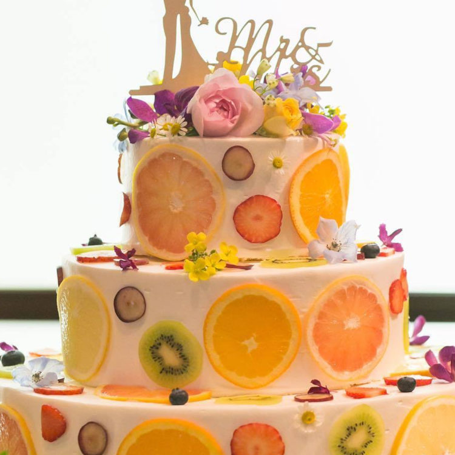
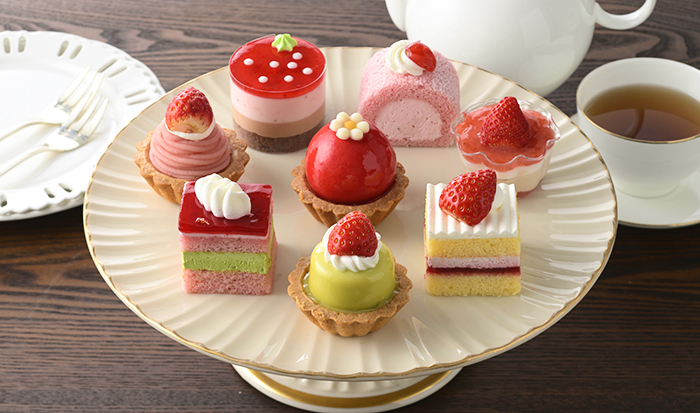
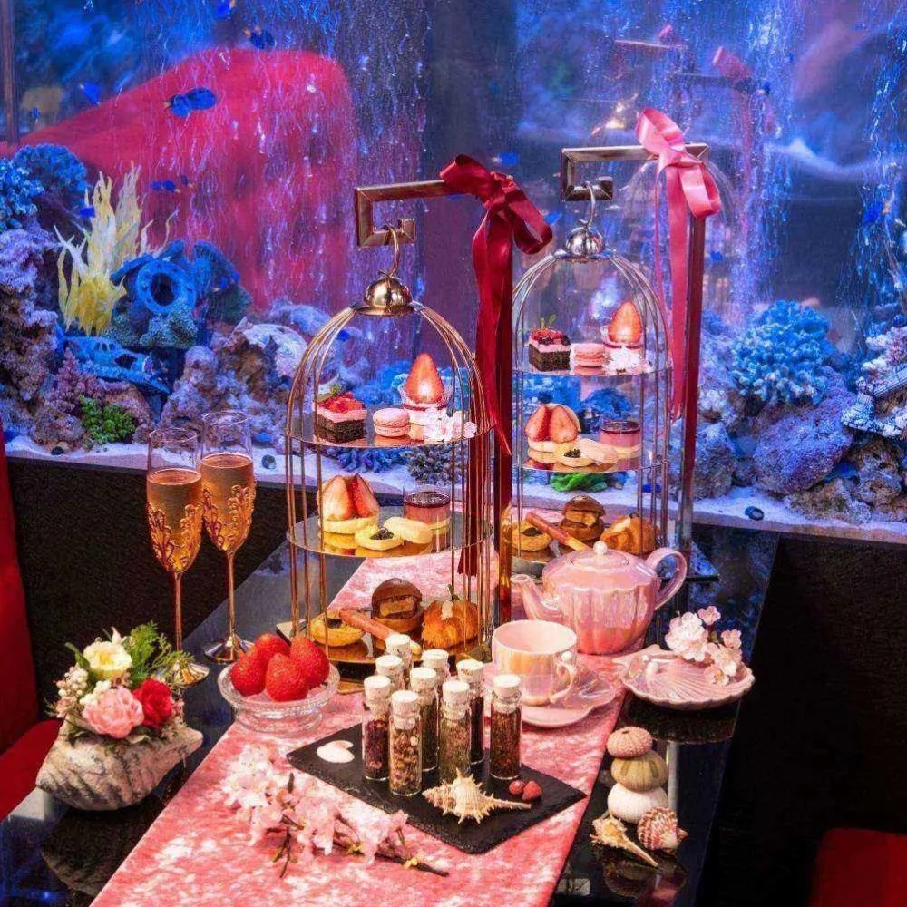

Saitama IT&Web Cafe
×
開きました。
商品紹介
カットケーキ：新鮮な素材を厳選し、手作りで仕上げるこだわりのスイーツ
ホールケーキ：サクサクタルトの上にカスタードクリームを絞り、 色んなフルーツで飾りました
焼き菓子：贅沢なティータイムを彩るスイーツたち。 職人が丁寧に焼き上げた自慢の焼き菓子がくつろぎのひとときに華を添えます
フォンダンショコラ：温かい状態で提供されて、カットすると中からチョコレートがとろりと溶け出すケーキです。生地を焼く時間と温度が、仕上がりを左右します
季節の商品
桜のパウンドケーキ：桜とチェリーを焼きこんだパウンドケーキです。しっとりした生地からさくらが口の中で優しく香ります
クール・ショコラ ルージュ:まろやかなホワイトチョコレートムースで、甘酸っぱいフランボワーズムースとジュレを包み込みました
バレンタインショコラ:ショコラムースとピスタチオムースに甘酸っぱい木苺とピスタチオをサンドして生クリームでデコレートしました
ハートフルベリー ～とちあいか～:とちあいか苺とホイップクリームをサンドしてベリーソースをコーティングしたハート型のケーキ
コンセプト
シャルル・パティスリーについては、高品質な素材を使った、本格的なフレンチスイーツを提供するパティスリーです。 毎日の土れ芋をがんる、心で天味しいスイーツさし指ください
「鮮度」を大切にする。焼き菓子も「鮮度」を大切にし、賞味期限を短く設定する。
1/1の精神:作り手にとっては何百、何千と作るお菓子も、お客様にとっては1/1であることを常に考える。
「ここにしかないお菓子作り」：世界中探しても、「ここにしかないお菓子」を作る。


